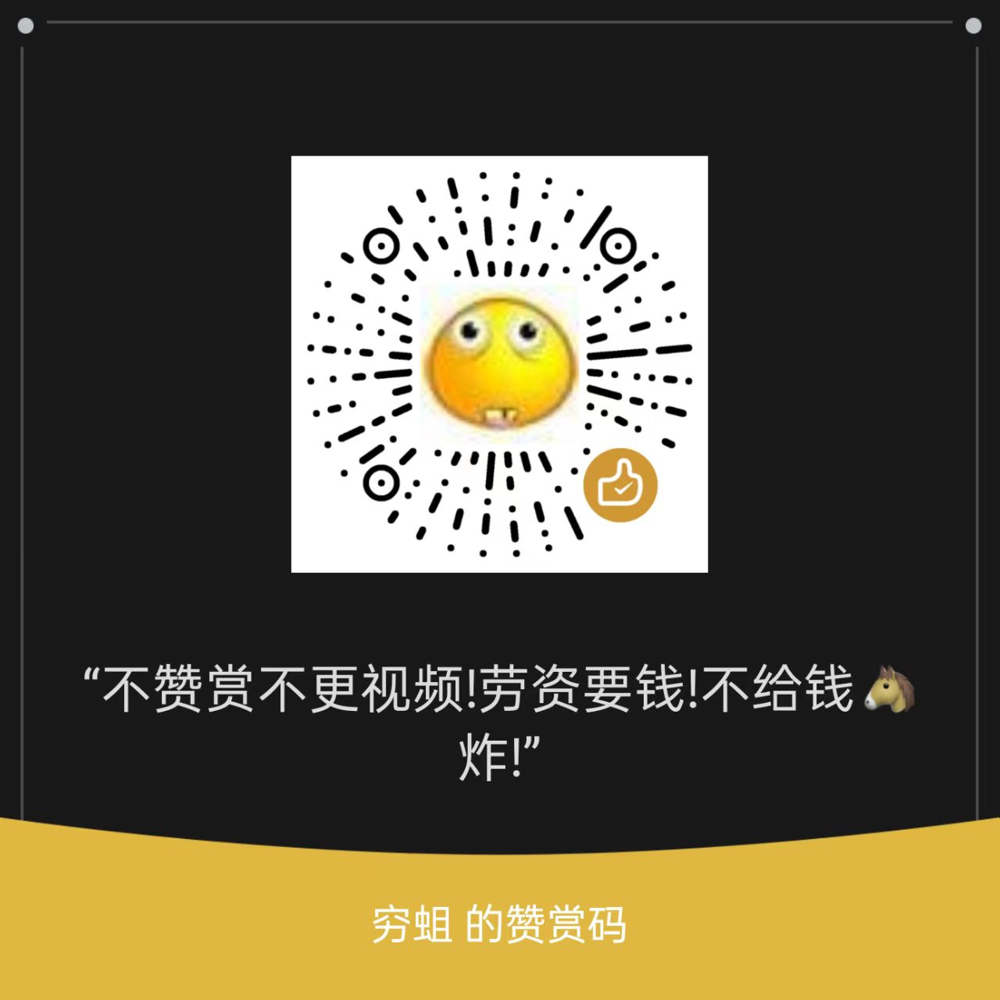

My Twitter
Click the botton to visit my twitter.
My Minecraft Realms
Click the botton to visit My Minecraft Realms.
RuiSite
Click the botton to visit RuiSite.
SUPPORT ME
Hover your cursor over the card to view the Support Me QR.
